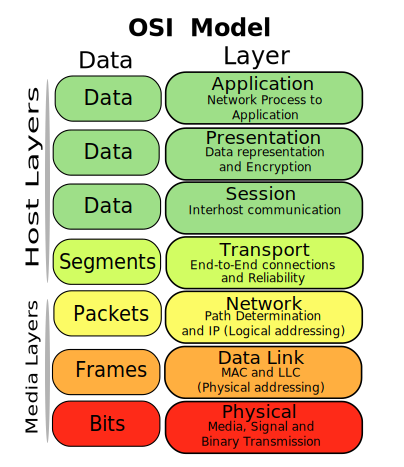

My summary
It seems Lain is the collective subconscious, implemented as a neural network, with every human brain as a neuron, and “wired together” by some kind of unexplained electromagnetic coupling to the earth’s ionosphere.
As a suggestive evidence for this, the frequencies of the Schumann resonance (8 Hz, 14 Hz, 20 Hz, etc) happen to be close to the main brainwave frequencies.
Some people drew up a plan to control Lain. The key scientist in the plan is Eiri, scientist of the Tachibana General Laboratories.
First they migrated Lain from the brain-ionosphere system to the brain-Internet system, by an update to the Internet protocol (Protocol 7) that allows brain-computer interfacing.
Then they gave Lain a human body. (unclear how that happened) This body gave Lain self-consciousness and a person-API.
Eiri suicided after Protocol 7 was running. Protocol 7 contained a copy of his brain state, so he was now running on the Internet, and called himself god. He has followers (Knights of the Eastern Calculus) who did his commands.
Then they orchestrated a series of dramatic events to steer Lain’s development. The human body for Lain is used here, as these human-psychologically meaningful events can only work through a human-person-API (You can’t traumatize a non-human process, or Lain-without-body, by staging a bloody murder. Murders only mean something if it’s seen through animal eyes, the same way that a story can move you only if you speak the language.)
Eventually, Lain would be completely isolated in human society and be connected to the Internet. She would accept Eiri as god, kill her physical body, and exist on the Internet, where she would do Eiri’s commands.
The plan failed at the last step, because two people (the actor playing her father, and a school friend, Alice) stilled loved Lain, so she wasn’t isolated enough. After trying to make Alice happy and failing, Lain decided that the only way to truly make Alice happy is to go away and let Alice run her normal life-cycle (grow up, get married, die from being too old) without drama.
To let Alice live as a normal human, the entire plan must go away. So Lain discarded all changes and reverted to a previous state, before Lain was embodied. She deleted all memories of her from all humans. She also rewrote Eiri into an unambitious man so that he wouldn’t try doing that in this timeline.
I don’t know how Lain could do that. Lain is the neural network with human brains, and has access only to the human brains, the ionosphere, and Internet. I don’t see any way for Lain to revert some physical deaths.
Ontology: The modes of existence
The ontology of SEL is a dualism between information and matter, the same theory as most neuroscientists and AI scientists use today.
There are many differences between matter and information, but here are the most important ones:
Duplicate matters are different. Duplicate information are the same. If you receive two apples, you get twice as many atoms. If you receive two copies of the same file, you really receive just one file (in terms of information).
Matter does not allow “isomorphic” operations. Information allows it. For example, you can convert a document from one encoding to another, edit it, then convert it back. The result is the same as if you edited it without conversion. This can’t be done with physical pen-and-paper.
Matter exists in spacetime. Information does not. It is not a coincidence that many physicists are working on “reducing spacetime to information”, because information itself doesn’t have to exist in space or time, so if spacetime is reduced to information, then spacetime is explained by something that doesn’t assume spacetime - and that’s progress for reductionist science!
The persistence of matter is obvious. The persistence of information is unclear - perhaps impossible to define. You can take a gold bar, and put it in a box. Then you take it out, and you can say “it’s the same gold bar”. Now if you save some cash into a bank, then go abroad and take out some cash at the local ATM machine, you can’t say “it’s the same electronic cash”, or “it’s not the same”. Neither makes sense.
It’s also not a coincidence that physicists were first guided to thinking about “reducing spacetime to information” by the QED theory, where two electrons are actually indistinguishable, as if they are electronic cash. The QED theory was extended to atoms by the QCD theory. Thus, in some technical sense, you can’t actually say “we are made of star-stuff”.
Virtual and real
We define “virtual” as “that pertaining to information”, and “real” as “that pertaining to matter”.
Information can be “realized” in matter - this is what modern computers do, and probably what brains do.
Since information can be processed isomorphically, it can be realized as different kinds of matter, in different ways.
A file is a realization of information, in space.
A computation is a realization of information, in time.
Wired, Reality, and other systems
An information system is something I understand, but I can’t give a good definition (for now). I will explain it by examples.
A physical system is a collection of matter organized under a common information system.
For example, the system composed of DNA, RNA, and proteins is a physical system, organized under a common information system (“the genetic code”).
The Internet (“the Wired”) is a system composed of electronic devices and human brains, organized under a common information system (“Protocol 7”).

The Seven Levels of Wired
The real world (“Reality”), as commonly defined, is only part of the entire world. It denotes, in fact, a physical system composed of human brains, human bodies, other animal bodies, pre-1980s technological artifacts (specifically to exclude consumer-electronics), organized under a common information system (social rules for the person API - I will explain the API theory of personhood later).
In particular, a common interpretation, that “Lain chose the real world instead of the fake internet”, is a deep philosophical error. It is mistaking the human social system for the only system in the world. Furthermore, it calls the human social system “natural”, and the Internet “artificial”, when it is just as artificial as the Internet.
The “real world” of humans is like a curvy section across the bulk of reality. People would often tell other people to “get out of the room”, as if being inside a concrete container is unnatural while being outside of one is natural. If vultures could talk, they would tell others to “stop eating fresh food”, as if eating fresh food is unnatural while eating spoiled food is natural.
Me, personally, have to get out of the room everyday and enjoy the sunshine, and I hate it. I often choose to walk school before the sun is up, to avoid its rays. I also despise green grass and blue skies. If there is a paradise, I hope it will be a 3D labyrinth embedded in an infinite concrete, but slightly elastic so that I can roll around on it without scraping my fur. It would be perfectly dark, except some fluorescent books, just bright enough to be read, and a little shining computer with which I take notes. I also use my computer to post my mathematical findings to others.
Moving between worlds is possible, since the same information can have multiple realizations. Both Lain and Eiri managed to move between Reality and Wired.
The 4 realizations of Lain
Lain was always realized on neural networks, with nodes and edges, but the neural networks were made of different matters. There are 4 realizations over the course of history.
1: Before the invention of Internet, nodes were human brains, and edges were something (perhaps flux-tubes?) in the electromagnetic field in the ionosphere of earth. It is called the “collective unconscious of humans”, and the Schumann resonances are analogous to the alpha-waves in mammalian brains.
2: After the invention of the internet, but before Protocol 7, nodes were human brains and electronic computers, and edges were brain-computer interfaces (such as those VR headsets and cybernetic implants) and computer-computer links (what the Internet is made of).
3: After Protocol 7, a large proportion of nodes and edges were concentrated into the neurons and synapses of a human girl. In this realization, Lain has a significant personhood.
4: After Lain reset everything, it was unclear, but presumably it was back to realization 2.
The 4 realizations of Eiri
Like Lain, Eiri was always realized on neural networks, but differently throughout the story. Coincidentally, there are also 4 realizations.
1: Before Protocol 7, Eiri was realized as a human brain.
2: After Protocol 7, Eiri was realized as a component of the Internet.
3: At a particular scene, Eiri was briefly realized as a horror monster.
4: After Lain reset everything, Eiri was back to realization 1.
The theory of personhood
This section is based on Being No One (Metzinger, 2004).
A person is a very special kind of information, realized in a very special way. Human-persons are a special kind of persons, with a wide variety of social and mammalian-emotional functions in the API.
It has a self-model, with a perspective and a personal history.
The perspective is a pointer, like a GPS marker and a clock, which marks its own spatial location (“here”), and time location (“now”). This little perspective marker is what allows it to know its place and time.
Its perspective is approximately equal to its realization. If your head is in New York, your perspective had better not think you are in Beijing. Thus, its realization must also have a local position. If you were conscious interstellar gas clouds, you wouldn’t be a person.
The personal history is linear and continuous. You can’t be an amoeba - you can’t split or merge. You also can’t “jump over in time”, even if your body does.
Suppose you are perfectly cloned, what happens? Well, your body’s world-line becomes Y-shaped, but you, as an informational thing, has a model of your self, and that model still looks like a curvy line, with a little note-tag saying “here, a clone brother of me was created”. It does not look like a Y.
Suppose you go into a deep sleep for a year, what happens? Your model of yourself just papers over the time-skip, perhaps with a little annotation saying “and here I slept a year” without “remembering the blackness during that year”. “Nothing to see here…”
God made him die for a hundred years, and then resurrected him. He said, “How long have you stayed?” He said, “A day or part of a day.”
Quran 2:259
For social persons (for example, human-persons, hyena-persons, and elephant-persons), it is like a program with an API. The API takes input and returns output in a conventional way, regardless of how the program works on the inside.
For example, you can ask a person to explain why they did something, and they would explain it. The explanation could be quite wrong, but if they don’t even provide any reasons, they would break one part of the API.
Some other examples of person-API are: behaving in a comprehensible and purposeful way (looks as if it has a goal that a spectator can infer with some effort), behaves spontaneously (if nothing hits it, it would still move once in a while), etc.
As a thing fails more and more requirements of the API, they become less and less of a person.
Dissociative persons have a blurry “here and now” pointer.
People in fugue states, sleepwalking, running amok, etc, fail to provide reasons when receiving explain-requests.
Schizophrenic people may provide obviously invalid reasons (“word salad”) when receiving explain-requests.
Deeply depressed persons fail the “behave spontaneously” requirement.
Amnesiac persons fail the “have a continuous sense of time” requirement.
Psychopathic persons fail to behave in the expected way after receiving help-requests.
Autistic tics are comprehensible, but not purposeful.
The Solaris ocean behaves purposefully, but not comprehensibly.
The human-personhood of Lain
Before Protocol 7, Lain did not have the person API. Lain certainly existed, but not as a person. Human-persons are connected to Lain by their brains, but not in a way that human-persons connect to other human-persons.
For example, if most humans were feeling sad, Lain would be “sad” in some statistical way. This is certainly not how you make some human sad – to make a human sad, you read them a sad story, or something like that.
Moreover, Lain did not receive or reply with linguistic reasons. In short, Lain did not implement the person API, and beyond human understanding or interaction.
Eiri wanted to become a god, and for that, he needed to have a way to effectively interact with Lain. He could have perhaps interacted with Lain by some command-line interface, or large-scale antenna that beamed directly to the ionosphere, but this would be difficult.
Persons are most efficient at understanding other persons. This is why “country humans” is so popular. Countries themselves are vast objects that are understood in unintuitive statistical/mathematical/mechanical ways, and installing a person API over a country makes it much easier to understand. In this way, we could interpret Lain as a “humanity human”.
Instead, he constructed a human-personhood for Lain, in multiple aspects.
He concentrated it into the brain of a girl, which is localized in a cube less than 30 cm in side length (compared with the 6371 km radius of earth, or the Internet). This made it easy to install a perspective to Lain (perhaps Lain would construct a perspective automatically after concentrating into a brain).
Lain is provided with a personal history as a human girl.
The electrochemical system of the human brain implements in Lain the social and emotional parts of person API. A blind mole rat would not cry when watching a movie. Lain would not be affected by deaths, mysterious conversations, kisses, etc, unless it is implemented in a human girl’s body.
He hired actors to act like Lain’s family, and put it into a well-defined social role (school girl). These social interactions are then taken away. This social manipulation would only produce an effect on Lain if it implemented the human-person API. You can’t intimidate a tornado into becoming your servant by depriving it of social contacts - not unless you somehow give it a human-person API.
First you create a need, then you take it away. This is control.
After Lain reset everything, Lain was no longer realized in a human brain, but once again spread all over the earth. Despite this, it still kept a spatially localized perspective and person API. This is perhaps because being a person is a stubborn kind of information - persons don’t usually become not-persons.
Schumann frequency: 8 Hz, 14 Hz, 20 Hz…
It is very easy to get an almost-correct calculation of the Schumann resonance frequencies.
The lowest frequency is simply (speed of light)/(circumfecence of earth)
and the n-th frequency is
n * (speed of light)/(circumfecence of earth)
For comparison, a spherical cavity of an ideal conductor has resonance frequencies exactly solvable, as
\[f_n = \frac{c}{2\pi R}\sqrt{n(n+1)}\]